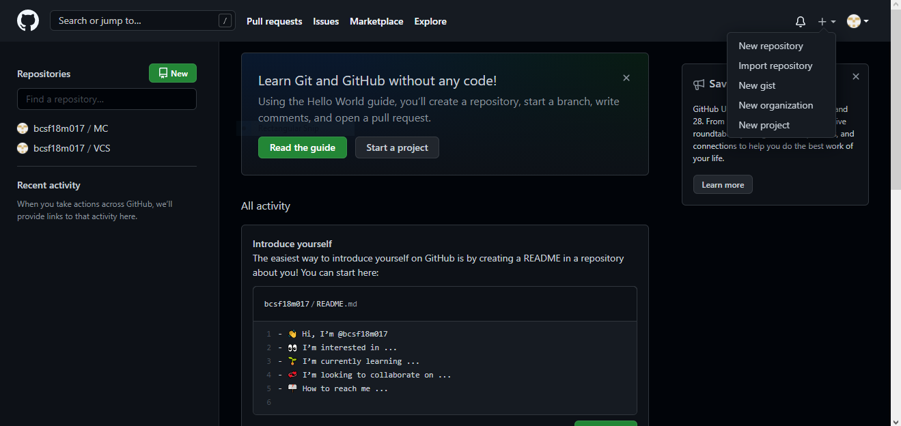
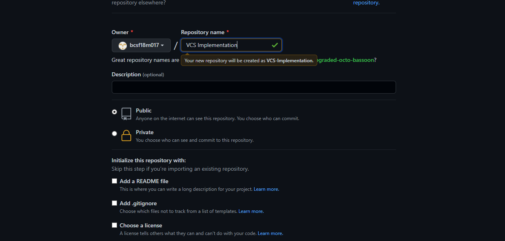
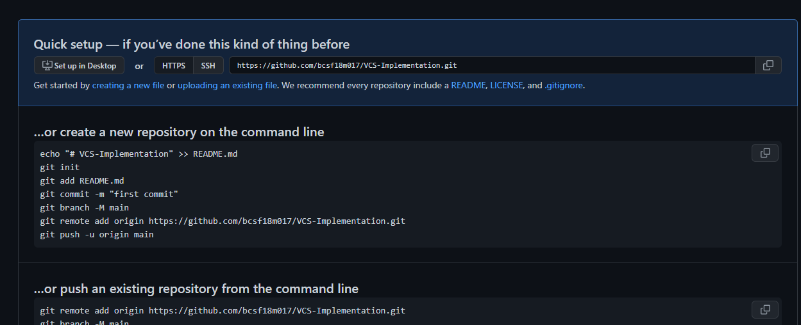
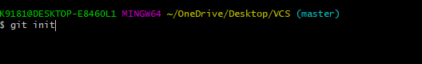
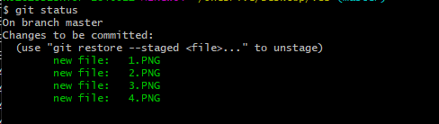
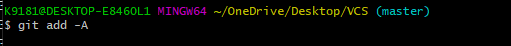
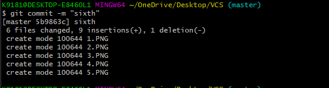
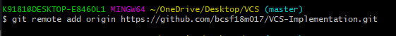
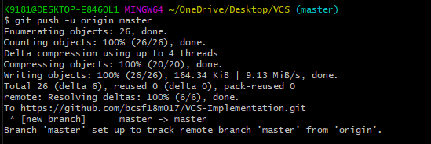
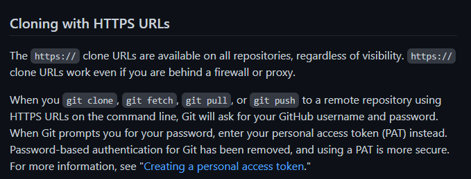

Version control, also known as source control, is the practice of tracking and managing changes to software code. Version control systems are software tools that help software teams manage changes to source code over time. As development environments have accelerated, version control systems help software teams work faster and smarter. They are especially useful for DevOps teams since they help them to reduce development time and increase successful deployments.
After creation your GitHub acount click on plus symbol on right top and then click on new repository.
You will be shown this page.Now create name for your repository and choose options of your choice and click on create repository
After successfully creation of repository you will be shown this page and this will be URL for your repository.
 git initOpen directory in terminal and initialize the empty git repository on local machine using commad git init
This command will tell you about files which are modifed,updated or deleted
 git addThe command git add File-Name (which add particular file to stage area ) or git add . (which add all files of directory to staging area)
 b>git commitOnce the files are in staging area, you can save them to commit history usnig coomand git commit -m Message
 git remote add origin URLOnce the commits have be saved we can send this changes to GitHub.In order to do that we first have to link over local repository which we created using git init and that repository which we created on GitHub, using command git remote add origin URL
 git push -u origin Branch-NameOnce the coonection between local repository and online repository has been established, we can push our changes to online or central repository so that data remain synchronous by using command git push -u origin Branch-name
 git cloneThe commnad git clone URL is used to clone or copy the central repository in your machine and we can use that code for any purpose.
